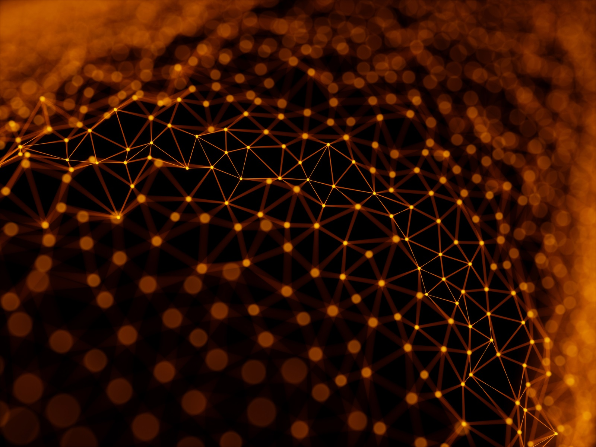

Nanotechnology’s Great Power:Balancing Innovation for a Responsible Future.
Maria Clarissa Macario
SOSCITECH
As nanotechnology advances, its capacity to transform various sectors such as
medicine, energy and materials science becomes more distinct. Considering the
innovative drug delivery systems that precisely target cancer cells; they exemplify
the remarkable potential of this field. However, as Uncle Ben articulated in a Spiderman film, "with great power comes great responsibility." The swift advancement of
nanotechnology engenders substantial ethical dilemmas that demand proactive
consideration, rather than merely reactive measures. Although the benefits are
significant, we must remain vigilant about the implications, because the future of
this technology hinges on our ability to address these challenges thoughtfully.
At the core of the ethical discourse regarding nanotechnology lies uncertainty
concerning its long-term effects on human health and the environment.
Nanoparticles (notably, because of their diminutive size) have the ability to infiltrate
biological membranes and engage with cellular processes in manners that larger
particles simply cannot. Although this opens avenues for groundbreaking medical
innovations, it simultaneously prompts apprehensions about unintended
consequences. For instance, nanoparticles could accumulate in human tissues
potentially resulting in unforeseen health or environmental hazards. However, the
absence of comprehensive long-term studies exacerbates this dilemma, leaving
regulators and the public to contend with unpredictable risks.
Advertisement
MoodLens : See Beyond the Surface.
Furthermore, the advancement and implementation of nanotechnology frequently
surpasses the creation of comprehensive regulatory structures. At present, there
exist significant gaps in the supervision of nanomaterials, especially within sectors
such as cosmetics, food packaging and pharmaceuticals, where these substances
are already in use. The lack of explicit regulations prompts a pivotal question
regarding accountability: Who bears responsibility if nanoparticles inflict harm
many years or even decades after their application? This ambiguity highlights the
necessity for policymakers to adopt precautionary principles that emphasize safety
and environmental stewardship prior to extensive commercialization. However, the
challenge remains significant, as the pace of innovation and the evolving nature of
these materials complicate the regulatory landscape.
One pressing ethical issue pertains to the possible socioeconomic ramifications of
nanotechnology. This technology, although capable of stimulating economic growth
and fostering innovation, may also deepen existing inequalities. The expenses
associated with developing and accessing nanotechnology-based solutions could
restrict their advantages primarily to affluent nations or corporations, thereby
placing developing countries and marginalized communities at a notable
disadvantage. If not managed meticulously, nanotechnology might exacerbate the
global divide, confining its life-saving applications in healthcare, agriculture and
clean energy to those who possess the financial means (however, the benefits
could be transformative). Furthermore, ethical dilemmas emerge within the context
of privacy and security. The advent of Nano sensors designed to monitor
individuals' health or assess environmental conditions raises considerable privacy
issues. Although these technologies hold the promise of revolutionizing healthcare
through personalized treatments and real-time diagnostics, they simultaneously
pose the risk of establishing intrusive surveillance systems that might encroach
upon personal liberties. The ethical challenge, therefore, lies in reconciling the
advantages of such technologies with the imperative to safeguard individual privacy
and autonomy.
Consequently, we can guarantee that it promotes the common good while also
protecting human health, the environment and global equity. However, achieving
this balance is challenging. Although many initiatives aim to address these issues,
they often fall short because of various obstacles. This dual focus is crucial for
sustainable development, but it requires a concerted effort from all stakeholders
involved.
Advertisement

FlexiSight : Perfect Vision, Anytime, Anywhere.
Respect the Balance: Why Protecting Nature Means Protecting Ourselves
Imagine a world where the rivers are no longer clean, where the forests are silent, and where whole species—animals, plants, insects—are forever exterminated. It sounds like some dystopian novel being brought to life, but this reality is sneaking in upon us all much sooner than we imagined. This destruction is not something that occurs "out there," in far-off rainforests or oceans we never see...
GMOs: Feeding the World or Endangering Our Health?
For a quarter of a century, genetically modified organisms, or GMOs, have been at the center of public debate globally. They represent the promise of a better agriculture and food-delivery future to many while for others this invention is a source of danger to human health. While GMOs improve crop yields and increase resistance to pests and diseases, with a tremendous improvement in nutritional...
DIFFERENCE OF ENVIRONMENTAL ISSUE AND SOCIAL ISSUE
Scientists studying about climate change have demonstrated, Over the past 200 years of climate change research, scientists have proven that nearly all of global warming is from human activities. The greenhouse gases developed from these activities-primarily carbon dioxide and methane-are warming the earth far faster than ever in the last two millennia. As much as some of the world's major thoughts...